Oficiální fanpage Einara Wyatta
Founded 2023 by npor. Steve Zayas · wyatt.ic
Einar Wyatt se narodil 18. 5. 1989, čímž vnesl do našeho světa spoustu světla a zločinoběžectví. O jeho dětství skoro nic nevíme, avšak domníváme se, že se již narodil s knírkem a cool brýlemi. Již od útlého věku proháněl zločince ve svém odtahovém voze a pozatýkal tak nespočet drogových dealerů.
O Einarovi
V roce 2021 byl převelen do sboru Policie San Andreas v místním oddělení v Red County. Díky svému nástupu se společně s tehdejší slečnou Frost a panem Zayasem zasloužili o převrat a ujali se celého PSA sboru, čímž rapidně stoupla jeho úroveň.
Se vznikem Irisu se Einar vydal cestou influencera. Bohužel mu sláva začala lézt do času a on tak nezvládal být aktivní v policejním sboru. Ředitelství PSA proto rozhodlo, že si Einara vezme pod svá křídla. Od té doby je jedním z nejdůležitějších úředníků v státě a ze své kanceláře v Los Santos dohlíží na řádný chod celého sboru — aniž by musel nastartovat odtahové vozidlo.
Fotogalerie
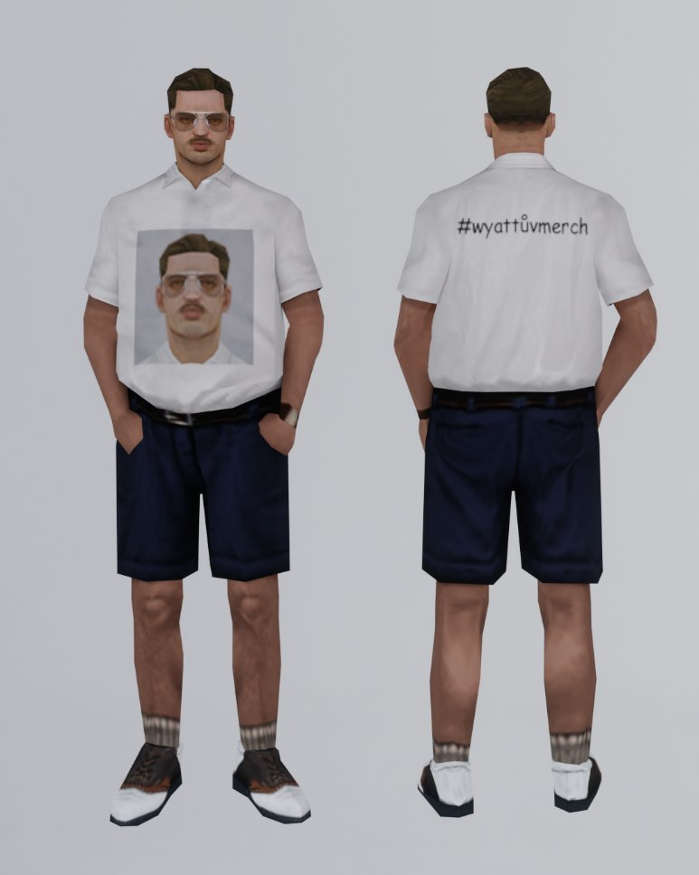
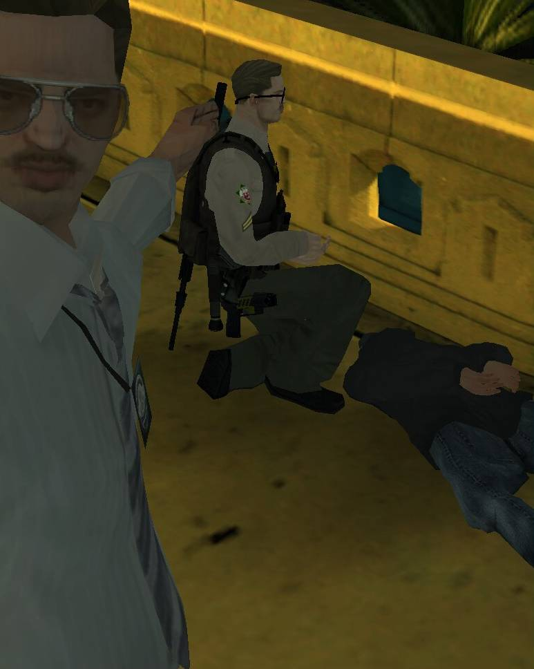
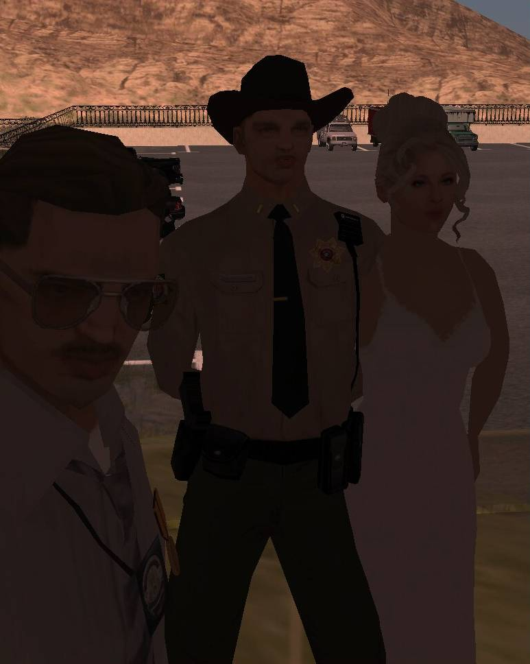
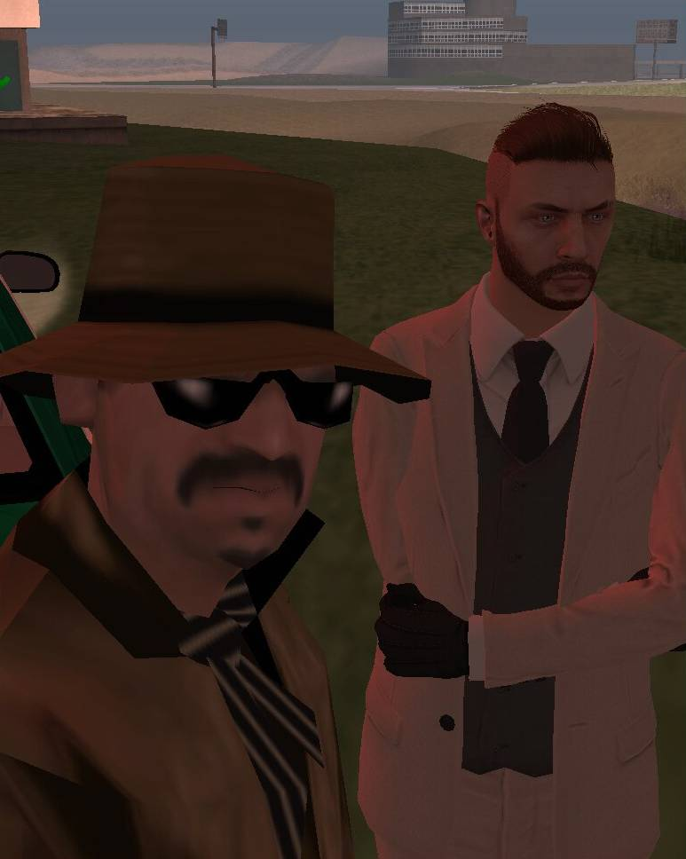
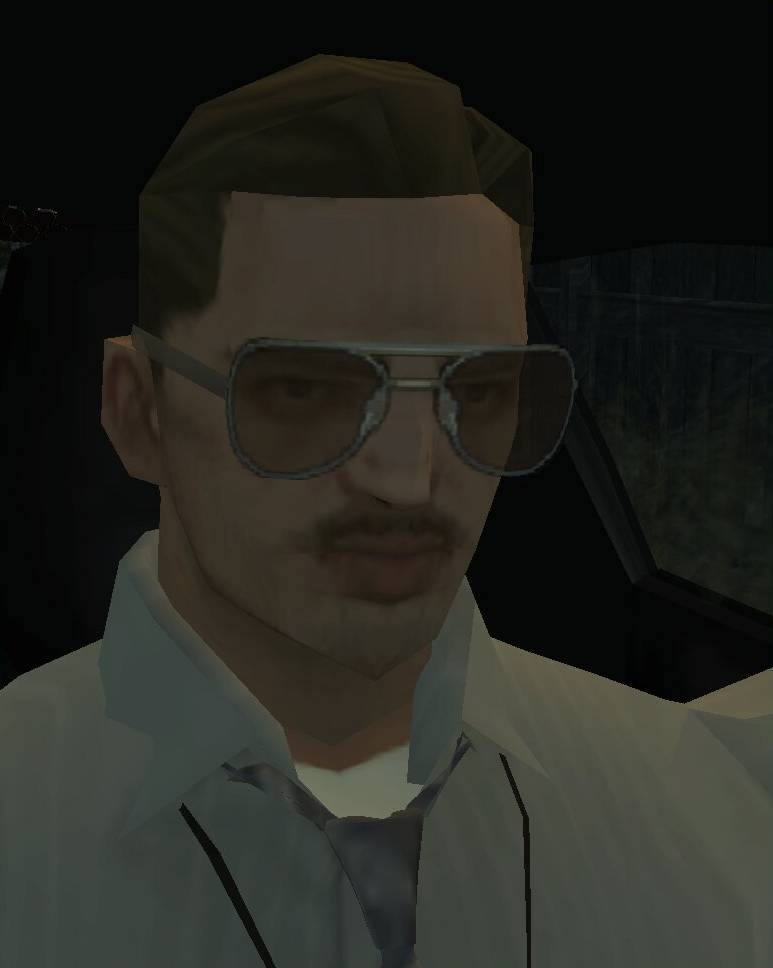
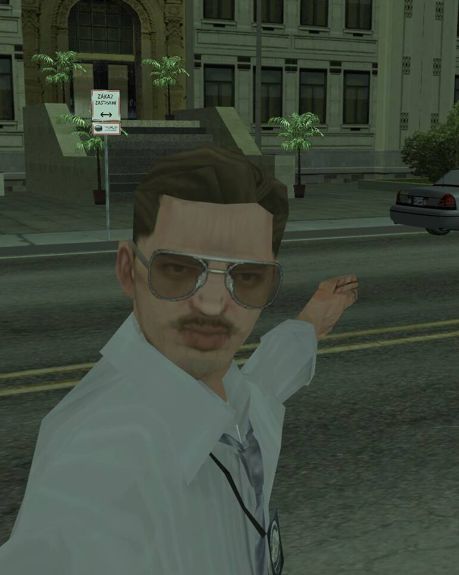
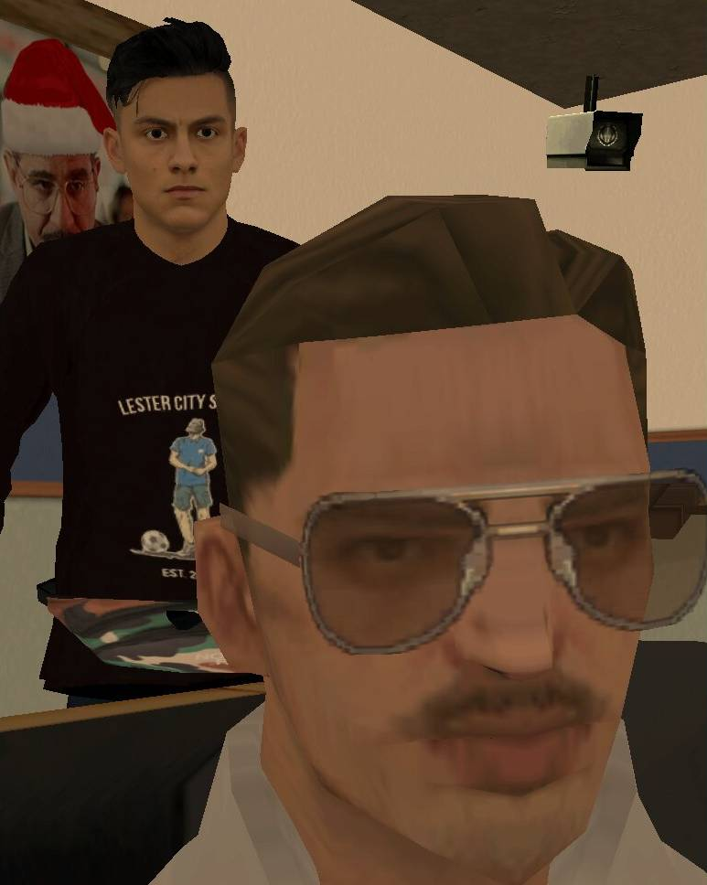
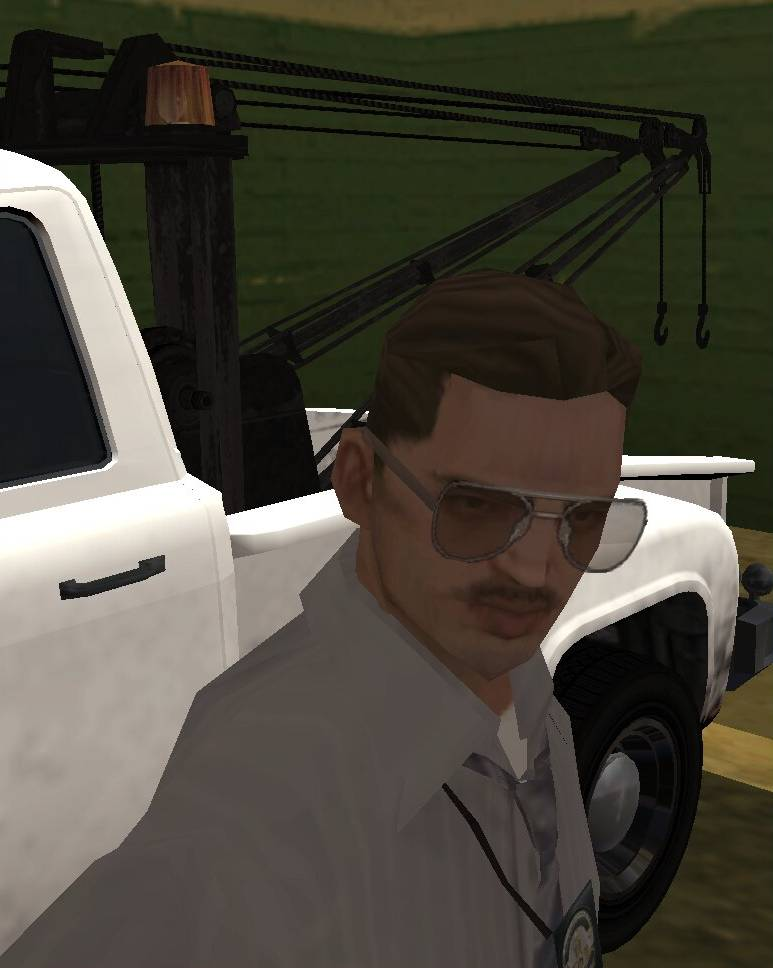
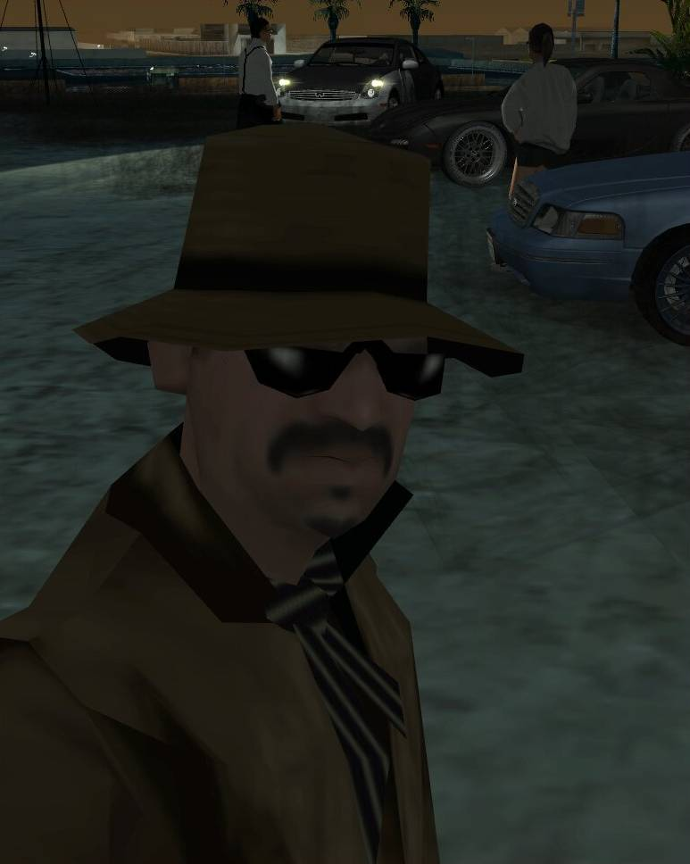
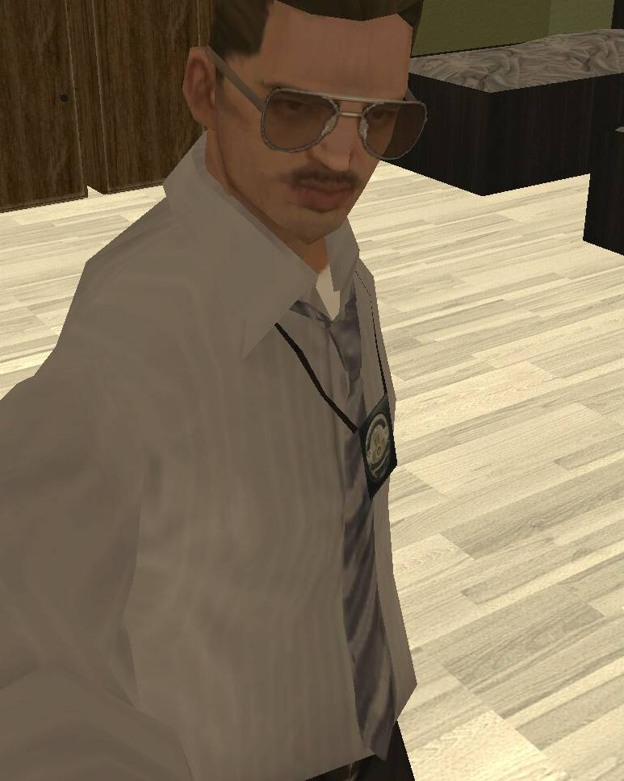
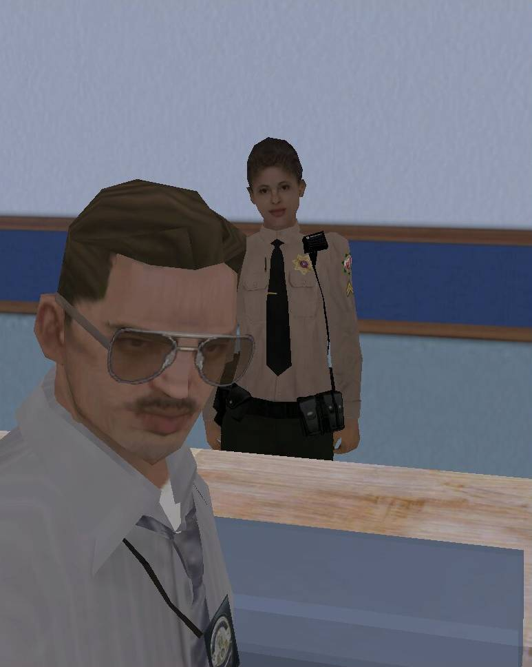
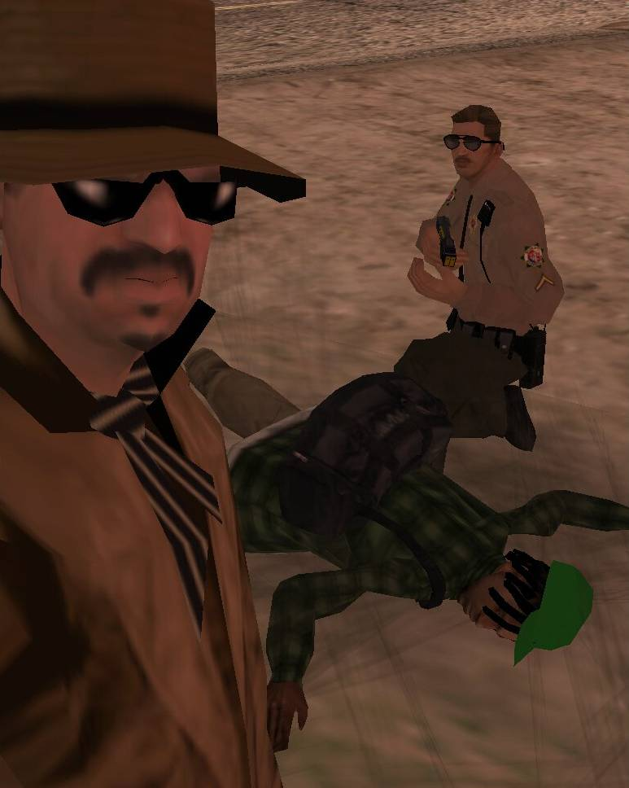
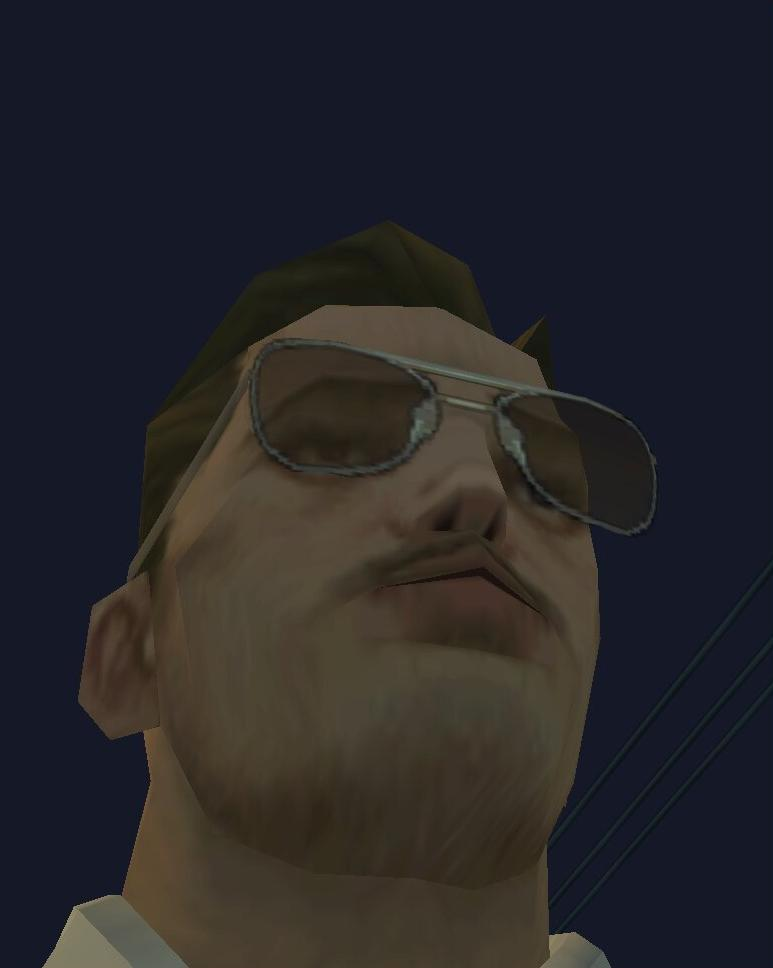